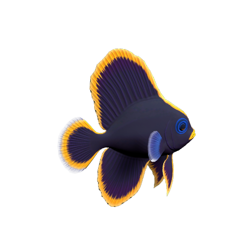
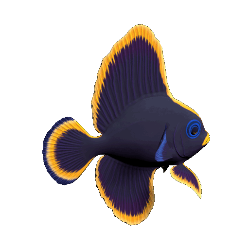
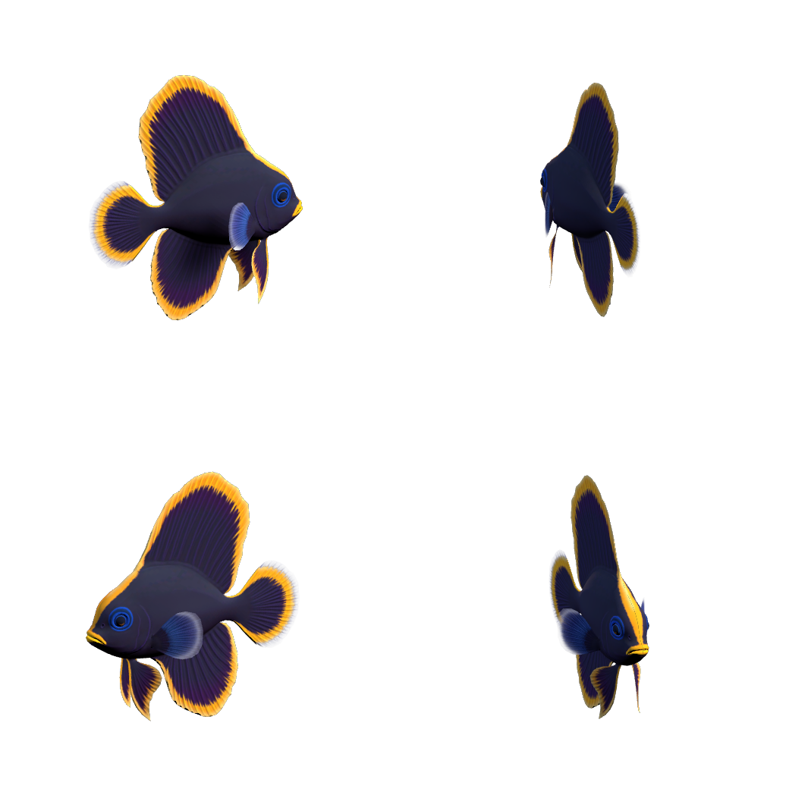
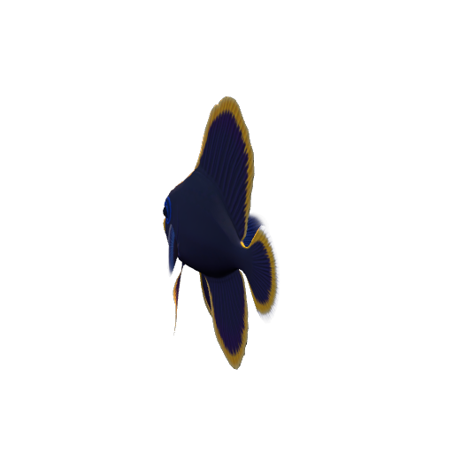
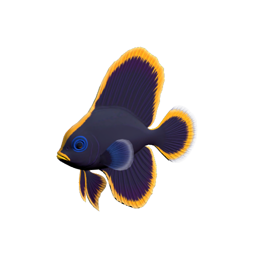
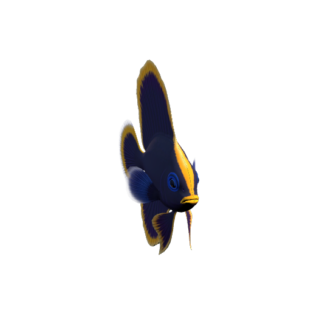

01 · FRAME
交互式构图Interactive framing
环绕、旋转对象、平移和缩放都会写回正式设置，导出画面与预览保持一致。
Orbit, rotate, pan, and zoom directly in preview; every adjustment feeds the final export.
UNITY · EDITOR EXTENSION
从 Prefab 到透明图标、方向序列、Sprite Sheet、GIF 与可直接使用的 2D 动画 Prefab。所有捕捉都在隔离预览场景中完成。
Turn Prefabs into transparent icons, directional sequences, sprite sheets, GIFs, and ready-to-use 2D animation Prefabs—all inside an isolated preview scene.

fish001 · Attack · GIF · 12 FPS01 · CAPTURE TOOLKIT
预览与导出读取同一组镜头、灯光、构图和动画参数，减少“看起来对，导出来不对”的反复调整。
Preview and export share the same camera, lighting, framing, and animation settings—so the final pixels match what you tuned.

环绕、旋转对象、平移和缩放都会写回正式设置，导出画面与预览保持一致。
Orbit, rotate, pan, and zoom directly in preview; every adjustment feeds the final export.

设定俯仰、偏航和起始角度，一次导出单方向图片与整齐的方向合成图。
Set pitch, yaw, and start angle, then export individual views and an aligned direction sheet.
锁定 AnimationClip 与采样区间，直接生成循环 GIF、序列帧或 Sprite Sheet。
Lock an AnimationClip and sample range to create looping GIFs, frame sequences, or sprite sheets.

除图片外，还可生成 2D AnimationClip、控制器、材质与 SpriteRenderer Prefab。
Go beyond pixels with 2D clips, controllers, materials, and ready-to-use SpriteRenderer Prefabs.

三点灯光、透明或渐变背景、阴影、描边、Logo 叠加与 2D Normal Map 都可配置。
Control lighting, backgrounds, shadows, outlines, logo overlays, and 2D normal maps.

在隔离预览场景处理单个或批量 Prefab，不修改源对象、场景和材质。
Capture one or many Prefabs in isolation without changing source objects, scenes, or materials.
02 · REAL PLUGIN EXPORTS
以下素材全部由当前 SpriteForge 设置正式导出。所有卡片使用完整画幅显示，点击可查看原始输出。
Every asset below was exported with the current SpriteForge settings and is shown uncropped. Open any card to inspect the original output.
03 · ONE EDITOR WORKFLOW
无需搭建临时场景、录屏或手工切图。SpriteForge 使用隔离副本完成捕捉，并保持源 Prefab、场景对象与材质不变。
No temporary scene setup, screen recording, or manual slicing. SpriteForge captures an isolated clone while leaving source Prefabs, scene objects, and materials untouched.
打开完整使用手册Open the full manual→拖入 Prefab，选择单张或准确锁定的 AnimationClip。
Drop in a Prefab and choose a still or an exactly locked AnimationClip.
在实时预览中调整镜头、方向、灯光、背景、阴影和构图。
Tune camera, directions, lighting, background, shadows, and framing in live preview.
一次生成图片、图集、GIF、元数据和可直接使用的 2D 资源。
Generate images, sheets, GIFs, metadata, and ready-to-use 2D assets in one pass.
04 · COMPATIBILITY
UNITY ASSET STORE LICENSE
SpriteForge Capture Studio 通过 Unity Asset Store 获取时，按 Unity 标准最终用户许可协议授权。本产品不采用额外的非标准 EULA。
When acquired through the Unity Asset Store, SpriteForge Capture Studio is licensed under Unity's standard End User License Agreement. No additional non-standard EULA applies.